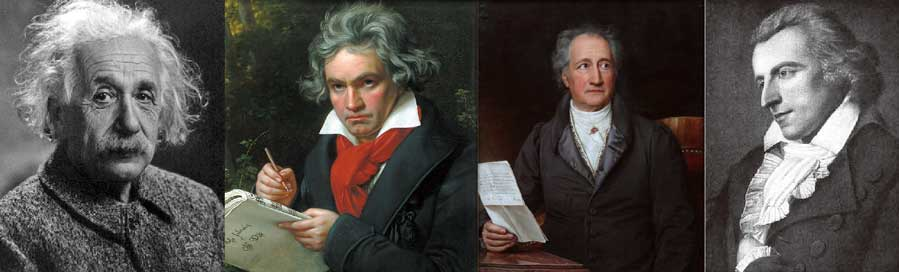
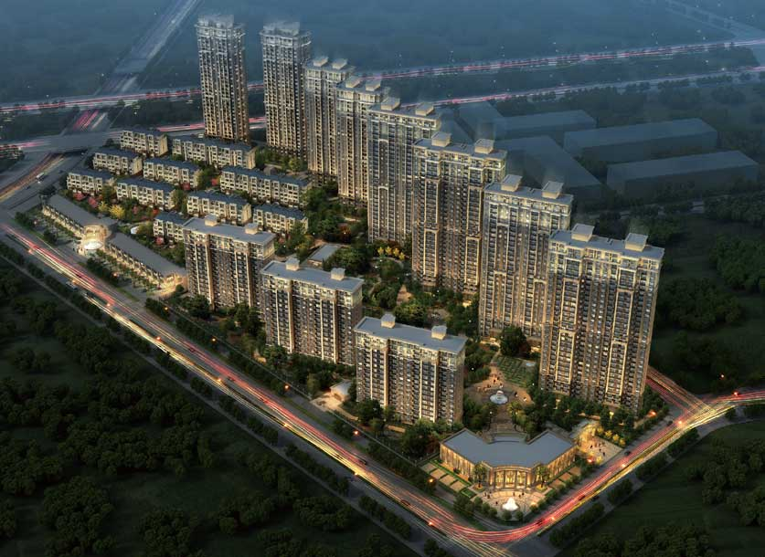
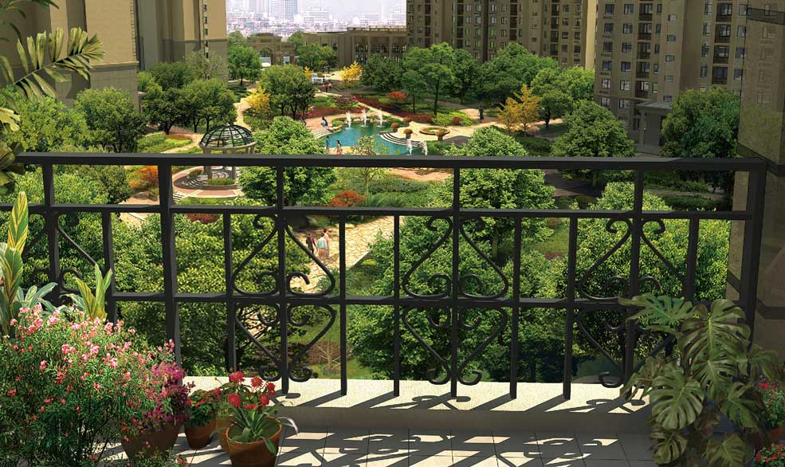

ESI I – Noble Mansion
Our owners will live in a luxurious garden which is full of modern European facilities. And they can also enjoy the comfortable that German technic and craft bring to them.
Noble Mansion has 8 buildings in total, including #1 - #8.
Among them, #2, #4, #6, #8 are high-rise apartments, #3, #5, #7 are small high-rise apartments.
Our buildings are all named after German famous persons’ names. Such as Albert Einstein, Ludwig vanBeethoven, Johann Wolfgang von Goethe and Friedrich Schiller. They made our projects full of charm and German style.
The distance between high-rise apartments is more than 135 meters according German standard, so that the large area of garden can be kept, to avoid the buildings are over-intensive.
The buildings are even distributed; every owner can enjoy the capaciousness and sunshine.
Our apartments are 15°inclined to the east, so that every flat on every floor can be filled by sunshine.
Above all, all the flats are bright, warm and comfortable.
Sunshine is the most important factor of being healthy, so our style of construction can provide you health and happiness.
These all features make our apartments a comfortable, quiet little heaven. All the owners can have a good rest after being busy for a whole day, feel the sense of home from the first step enter into the gate.
